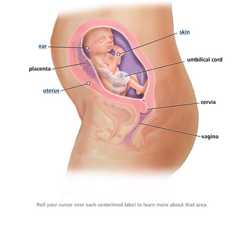

Meski lemak semakin bertumpuk di dalam tubuh bayi, kulitnya masih
kendur sehingga tampak keriput. Ini karena produksi sel kulit lebih
banyak dibandingkan lemak. Ia memiliki kebiasaaan 'berolahraga',
menggerakkan otot jari-jari tangan dan kaki, lengan dan kaki secara
teratur. Beratnya hampir 450 gram
Tangan dan kaki bayi telah terbentuk dengan sempurna, jari juga
terbentuk sempurna.
 Minggu ke-24 :
Paru-paru mulai mengambil oksigen meski bayi masih menerima oksigen
dari plasenta. Untuk persiapan hidup di luar rahim, paru-paru bayi
mulai menghasilkan surfaktan yang menjaga kantung udara tetap
mengembang
Kulit bayi mulai menebal